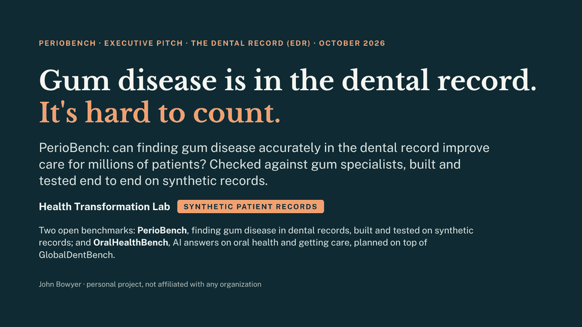
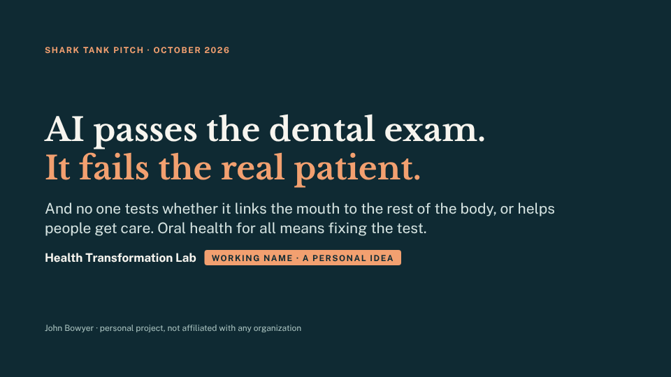

Why benchmarks
What a benchmark tests is what gets fixed.
AI companies are graded on public benchmarks and compete to raise their scores. Most benchmarks test exam knowledge, and studies of real patient cases have found AI falling short on questions such as drug interactions. Dental records have the same gap: gum disease is written down in pieces, and the pieces often disagree.
PerioBench: trustworthy records
Measure the data quality of electronic dental records, so gum disease can be counted, followed over time and linked to diabetes care.
OralHealthBench (planned): accurate AI answers
Score the AI that millions of people ask on the questions that matter at the seam of medical and dental care: medicines, chronic disease, emergencies.
Open and public
Questions trace to published evidence, scores are public, and the code, the synthetic data and the methods are open for anyone to check.
Benchmark 1 · dental records · working on synthetic data
PerioBench
Gum disease is in the dental record. It's hard to count.
Gum disease (periodontitis) is written down at almost every dental visit, but in pieces: notes, forms, codes and measurements that often disagree. So it is often missed, hard to follow over time, and hard to link to diabetes care. PerioBench scores how accurately rules and AI find it in the whole record. It runs end to end on synthetic records:
- the whole record, combined by rules that read the gum measurements first: 234 of 240 charts right;
- the free-text note alone, read by a small trained model: 219 of 240;
- a bigger medical AI (MedGemma 1.5 4B) used as is: 185 of 240.
Scored against the generator's truth on synthetic charts, not clinical performance. Read in a different order, the same evidence gets 173: the order is one of the findings.

Benchmark 2 · AI answers · planned
OralHealthBench
AI passes the dental exam. It fails the real patient.
Twelve leading AI models average 81% on dental licensing-exam questions but 22% on questions built from published patient cases (GlobalDentBench, 2026). Most benchmarks test exam knowledge, and studies of real patient cases have found the same gap: on real hospital cases, models didn't follow the clinical guidelines doctors use (Hager et al., 2024); people using them did no better than people using a source of their choice (Bean et al., 2026); and against a standard drug-interaction checker, ChatGPT-3.5 got 47% of 255 drug pairs right (Al-Ashwal et al., 2023). OralHealthBench, planned and building on GlobalDentBench, will put real-world questions where dentistry meets medicine on a public scorecard, such as a medicine that makes a tooth extraction unsafe, each traced to published evidence, and will measure how much an open evidence agent improves the answers.
A third idea, AccessBench, is exploratory: it would ask whether an answer works for someone with no coverage, no car or no dentist nearby.

How the two connect
One way to test AI, from gum charts to the questions people ask.
The dental record path builds synthetic patients whose right answers are known, in OMOP, the data format medicine already uses. Those patients become test questions for OralHealthBench. AI is tested the same way at every step, with the same models, harm grades and leaderboards.
Synthetic patients
Made-up patients in OMOP, so every right answer is known.
Gum charts
PerioBench: can rules and AI read the whole dental record accurately?
Case questions
The same patients become questions, scored for accuracy and harm.
Medical-dental questions
OralHealthBench and AccessBench: the questions people actually ask.